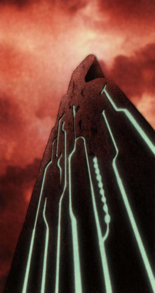

 |
| (Tower Report 3) - Tower Function Report (1/2) Record by 'Compiler' Zadoc The
rulers of the ancient times created an administrative system (2/2) The path to free ourselves from
the will of the ancients lies is the destruction, or neutralization
of all Towers. The following is a summary of the research the 'Compilers'
have done through the years. Function of the Tower (1/4) Though with slight variations,
Towers' responsibilities can be divided into two categories: (2/4) At the same time the Towers purify
the air, water, and soil to enlarge inhabitable areas, they employ monsters
to remove elements that threaten the environment, including humans. (3/4) But over the years, the Towers, have worn down. They are not functioning efficiently. The regeneration process that began in the Ancient Age has still not been completed. (4/4) However, if the Towers return
to normal, the number of humans would have to be severely reduced, or
we will have to live in a much harsher environment, where the fruits
of the land would not regenerate. |